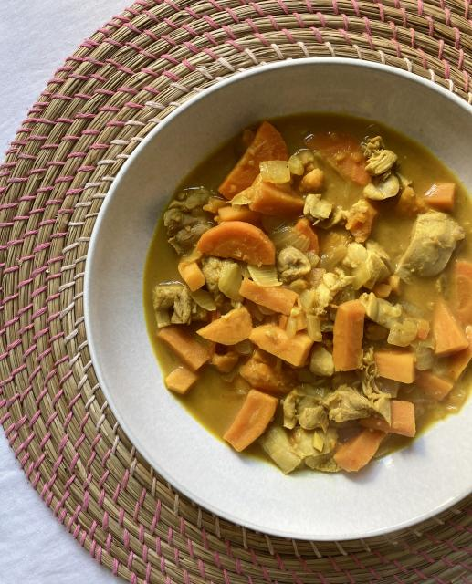

Chicken & Vegetable Lemongrass Stew
This is a delicious recipe for chicken and vegetable lemongrass stew.
Pairs well with a side of crusty bread or steamed rice.

Serves 8.
Ingredients
- 2 tbsp Olive Oil
- 8 boneless/skinless chicken thighs
- 2 large sweet onions, loosely chopped
- 1-2 carrots, cut in 1/4" circles
- 2 sweet potatoes, peeled and cubed 1/2"
- 8 cloves of garlic, finely chopped
- 1 tbsp freshly grated ginger
- 2 tsp turmeric
- 2 stalks of lemongrass *See “Infusing with Lemongrass” note below
- 4 cups of chicken broth or chicken Better Than Bouillon
- 1 13.66 fl oz can of coconut milk
- 1 tsp ground pepper (or to taste)
- 1 tsp salt (or to taste)
Steps
-
Cook the chicken thighs on a skillet in 1 tbsp olive oil for 2-3 minutes
on both sides to hold in the flavor. Set aside to cool and then cut them
into 1" chunks. They will still be pink inside but will be cooked more
later in the stew.
-
Sauté the onions over medium heat in a large pot in 1 tbsp olive oil for
5-6 minutes. Add the carrots, sweet potatoes, garlic, ginger, turmeric,
lemongrass, and pepper, and sweat the vegetables covered for 10 minutes
at a med/low heat.
-
Add the chicken broth, coconut milk, and chicken, and simmer for another
10 minutes or until vegetables are cooked to your liking.
-
Salt to taste and enjoy with any of your favorite "sopping up" sides.
*Infusing with Lemongrass
To infuse your stew with the bright, citrusy flavor of lemongrass, follow
these steps:
-
Trim off the spiky tops and the bases, crush the stalks with the side of
a knife to release their aromatic oils, and then cut them into 2-inch
pieces. Remove the pieces before eating (they tend to be woody) or eat
around them.